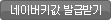

지도API는 웹사이트에 지도를 표시할 수 있도록 네이버에서 제공하는 무료서비스입니다.
네이버지도를 활용한 기능들을 사용하시려면 네이버에서 지도키값을 발급받아 솔루션 관리자에 등록해 주셔야 합니다. 다음의 안내1)을 참고하시면서 설정하시기 바랍니다.
안내1)+ 실제서비스 페이지와 안내사항이 다를 수도 있습니다.
1. 네이버 홈페이지에 로그인한 후
 버튼 클릭하여 열리는 페이지에서
지도API 항목 우측의
키 추가 버튼을 클릭하여 지도키 발급페이지로 이동합니다.
2. 다음으로
사용환경을
웹 으로 선택하고
URL 입력란에 다음과 같이 입력합니다.
URL :
3. 다음으로
이용약관에 동의 후
키 발급 버튼을 클릭하여 지도키를 발급 받습니다.
4. 발급받은 키값을 복사하여
◀Click 툴에 추가합니다.
[주의] 지도key는 도메인 마다 한개씩만 설정하셔야 합니다.
안내2)
네이버지도 API의 경우
일일 100,000 페이지 요청까지 지원하고 있으며 초과시 서비스가 중단될 수도 있습니다. 일일 제한량을 초과하는 활용을 위해서는
네이버 오픈API 제휴 페이지를 통해 제휴신청을 하시기 바랍니다.
안내3)
네이버에서 지도 API의 서비스환경을 변경할 경우 지도 이용에 불편이 생길 수 있습니다.
네이버지도 이용에 문제가 발생했을 경우 랭크업 기술지원센터에 문의해주세요.